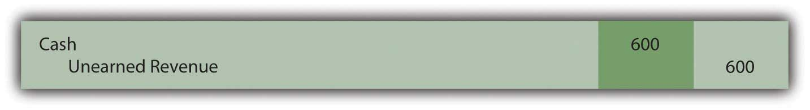
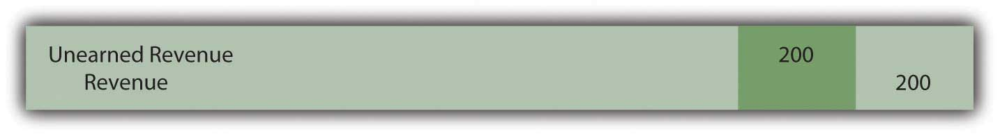
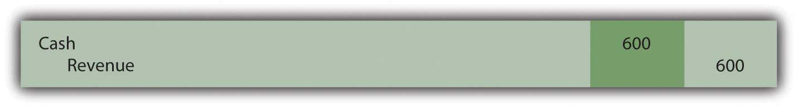
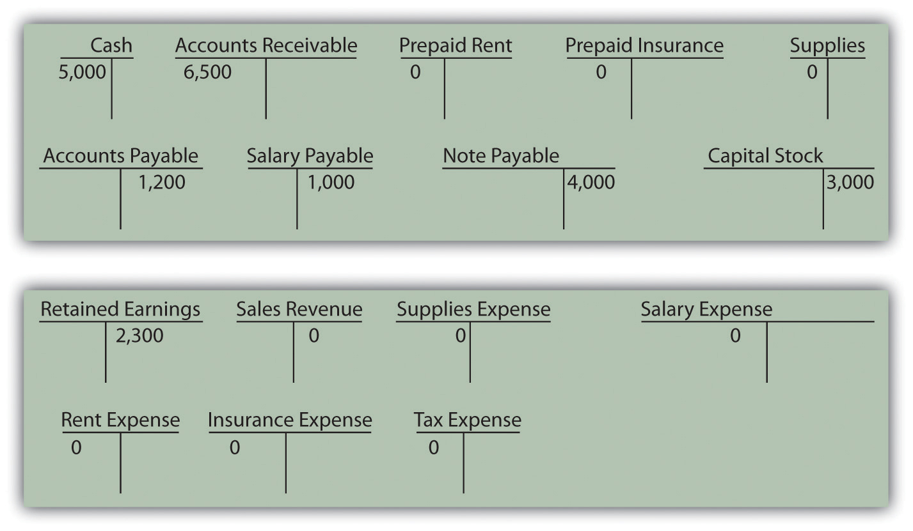

Which of the following accounts would be closed at the end of the financial statement cycle?
Jenkins Company received $600 from a client in May for work Jenkins would perform during May and June. What entry should Jenkins make on May 31 if one-third of the work is complete on that date?
Figure 5.9
Figure 5.10
Figure 5.11
Figure 5.12
Which of the following accounts would increase retained earnings when closed into it?
Which of the following is not one of the four types of adjustments?
In September 20X3, LaToya Corporation paid for insurance for the next six months in the amount of $42,000. On December 31, LaToya’s accountant forgot to make the adjusting entry that was needed. Which of the following is true?
Determine if the following adjusting entries are
Determine if the following transactions for Marlin Corporation require an adjustment or not. If an adjusting entry is required, give the correct entry.
Keating Inc. rents its headquarters from Starling Enterprises for $10,000 per month. On September 1, 20XX, Keating pays Starling $60,000 for six months worth of rent.
Leon Jackson is ecstatic! First National Bank just approved a loan for Leon to start a Web site design and maintenance business called Webworks. He is now ready to purchase his needed equipment, hire his administrative help, and begin designing sites. During June, his first month of business, the following occur:
a. Webworks signs a note at the bank and is given $10,000 cash.
b. Leon deposits $2,000 of his own money into Webworks’s checking account.
c. Webworks purchases a new computer and additional equipment for $3,000.
d. Webworks purchases supplies worth $200 on account that should last Webworks two months.
e. Webworks hires Nancy Po to assist with administrative tasks. She will charge $100 per Web site for her assistance.
f. Webworks begins working on his first two Web sites, one for Juan Sanchez, a friend of his dad’s and the other for Pauline Smith, a local businesswoman.
g. Webworks completes the site for Mr. Sanchez and sends him a bill for $600.
h. Webworks completes the site for Ms. Smith and sends her a bill for $450.
i. Webworks collects $600 in cash from Mr. Sanchez.
j. Webworks pays Nancy $100 for her work on Mr. Sanchez’s Web site.
k. Webworks receives $500 in advance to work on a Web site for a local restaurant. Work on the site will not begin until July.
l. Webworks pays taxes of $200 in cash.
Required:
A. Prepare journal entries for the above events if needed.
B. Post the journal entries to T-accounts.
C. Prepare an unadjusted trial balance for Webworks for June.
D. Prepare adjusting entries for the following and post them to your T-accounts, adding any additional T-accounts as necessary.
m. Webworks owes Nancy $100 for her work on Ms. Smith’s Web site.
n. Leon’s parents let him know that Webworks owes $80 toward the electricity bill. Webworks will pay them in July.
o. Webworks only used half of the supplies purchased in (d) above.
E. Prepare an adjusted trial balance for Webworks for June.
Jan Haley owns and operates Haley’s Dry Cleaners. The following occurred during December:
a. On December 1, Haley prepaid rent on her store for December and January with $2,000 cash.
b. On December 1, Haley purchased insurance with cash in the amount of $2,400 that will last six months.
c. Haley paid $900 of her accounts payable balance.
d. Haley paid off all of her salaries payable balance.
e. Haley purchased supplies on account in the amount of $2,400.
f. Haley paid a salary to her assistant of $1,000 in cash for work done in the first two weeks of December.
g. Haley dry-cleaned clothes for customers on account in the amount of $8,000.
h. Haley collected $6,300 of her accounts receivable balance.
i. Haley paid tax of $750 in cash.
Required:
A. Prepare the journal entry for each transaction.
B. Prepare all necessary T-accounts. Numbers already under the accounts represent the prior balance in that account.
Figure 5.13 Opening T-Account Balances

C. Prepare a trial balance dated 12/31/XX.
D. Make the following adjusting entries for the month of December and post them to the T-accounts:
j. Rent expense.
k. Insurance expense.
l. Haley owes her assistant $1,000 for work done during the last two weeks of December.
m. An inventory of supplies shows $400 in supplies remaining on December 31.
E. Prepare an adjusted trial balance dated 12/31/XX.
F. Prepare an income statement, statement of retained earnings, and balance sheet for the month ending December 31, 20XX.
On January 1, Kevin Reynolds, a student at State U, decides to start a business. Kevin has noticed that various student organizations around campus are having more and more need for mass produced copies of programs on CDs. While a lot of students have a CD drive on their computers that can write to CDs, it is a slow process when a high volume of CDs is needed.
Kevin believes that with a beginning investment in specialty equipment, he can provide a valuable product to the college community. So on 1/1, Kevin officially begins “Kevin’s Kool CD Kopies.” Of course, Kevin is very careful to ensure that his customers have full ownership rights to the material on their CDs.
Part 1:
The following occur during January.
1. Kevin deposits $500 of his own money into the company’s checking account.
2. Kevin signs a note payable in the amount of $1,000 from Neighborhood Bank. The note is due in one year.
3. KKCDK (Kevin’s Kool CD Kopies) purchases a CD duplicator (a piece of equipment), which can copy seven CDs at one time. The cost is $1,300 and he pays cash.
4. KKCDK purchases 500 blank CDs for $150 on account.
5. KKCDK pays $20 cash for flyers to advertise.
6. KKCDK quickly catches on with the student groups on campus. KKCDK sells 400 CDs to various groups for $0.80 per CD. KKCDK receives cash payment for 300 of the CDs and the student groups owe for the other 100 CDs.
7. KKCDK pays $100 on its accounts payable.
8. KKCDK receives $40 in advance to copy 50 CDs for a student group. He will not begin work on the project until February.
9. KKCDK incurs $40 in tax expense. The taxes will be paid in February.
Required:
A. Prepare journal entries for the above events if needed.
B. Post the journal entries to T-accounts.
C. Prepare an unadjusted trial balance for KKCDK for January.
D. Prepare adjusting entries for the following and post them to your T-accounts.
10. Kevin’s roommate, Mark, helps with the CD copying and delivering. KKCDK pays Mark a salary of $50 per month. Mark will get his first check on February 1.
11. KKCDK incurs $10 in interest expense. The interest will be paid with the note.
E. Prepare an adjusted trial balance for KKCDK for January.
F. Prepare financial statements for KKCDK for January.
Part II: The following occur in February:
12. Kevin decides to expand outside the college. On the first day of the month, KKCDK pays $20 in advance for advertising in the local paper. The advertisements will run during February and March.
13. The student groups paid for the 100 CDs not paid for in January.
14. KKCDK paid off its remaining accounts payable, salaries payable, taxes payable and interest payable.
15. KKCDK purchases 450 CDs for $135 on account.
16. KKCDK sells 500 CDs during the month for $0.80 each. KKCDK receives cash for 450 of them and is owed for the other 50.
17. KKCDK completes and delivers the advanced order of 50 CDs described in number 8 above.
18. KKCDK incurs $80 in tax expense. The taxes will be paid in March.
Required:
G. Prepare journal entries for the above events if needed.
H. Post the journal entries to the T-accounts.
I. Prepare an unadjusted trial balance for KKCDK for February.
J. Prepare adjusting entries for the following and post them to your T-accounts.
19. Mark continues to earn his salary of $50 and will be paid on March 1.
20. An adjustment is made for advertising in number 12 above.
21. KKCDK incurs $10 in interest expense. The interest will be paid with the note.
K. Prepare an adjusted trial balance for KKCDK for February.
L. Prepare the financial statements for February.